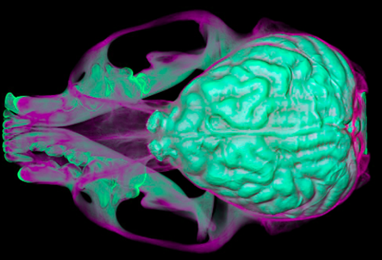

3D imaging
We use 3D models generated from CT scans of skeletal and soft tissue specimens to understand anatomical variation.
Department of Anatomy · Midwestern University · Glendale, AZ
Study of Quantitative Evolution and Anatomy in Carnivorans
My lab seeks to understand the drivers of morphological evolution, using methods in 3D imaging, genomics, and modeling at the population level.

What we do
Why do populations of the same species have such diverse morphologies? What are the driving forces behind this and the evolution of a species?
3D imaging
We use 3D models generated from CT scans of skeletal and soft tissue specimens to understand anatomical variation.
Genomics
We study the genome of these same organisms to understand how genetics plays a role in morphological variation.
Environment
We study a series of environmental factors, such as climate, vegetation, and teratogens, to understand how these may drive morphological variation.
Modeling
We combine all this data to model the relationship that each factor plays in driving morphological evolution at the population level.
Study species
Our core work focuses on three North American mustelids, with the goal of extending our research across North American musteloids.

Martes americana/M. caurina
IUCN Red List Least Concern · population decreasing
Sources: Helgen, K. & Reid, F. 2016. Martes americana. IUCN Red List of Threatened Species 2016: e.T41648A45212861.; Ellis, E. 1999. Martes americana. Animal Diversity Web.

Lontra canadensis
IUCN Red List Least Concern · population stable
Sources: Serfass, T. 2021. Lontra canadensis. IUCN Red List of Threatened Species 2021: e.T12302A164577078.; Dewey, T. & Ellis, E. 2003. Lontra canadensis. Animal Diversity Web.

Neogale vison
IUCN Red List Least Concern · population stable
Sources: Reid, F., Schiaffini, M. & Schipper, J. 2016. Neogale vison. IUCN Red List of Threatened Species 2016: e.T41661A45214988.; Schlimme, K. 2003. Neovison vison. Animal Diversity Web.
Anatomical systems
We study multiple anatomical systems, each of which plays a different role in the animal’s interaction with its environment. Together, we aim to understand the evolution of the head as a whole.

Brain size and shape reflect how an animal senses and moves through its environment. We compare relative brain volume across carnivorans in relation to diet and environment, and we use virtual endocasts to measure variation within species, including North American river otters across ecoregions and between the sexes. We apply the same approach to musteloids, fishes, and tadpoles exposed to environmental teratogens.
Recent abstracts: endocast variation in river otters; brain sexual dimorphism in otters; musteloid brain morphology; tadpole CNS variation; brain variation in Cyprinodontiformes.

The skull houses the brain and sensory organs and anchors the muscles of feeding and facial expression. We measure skull shape variation across populations and sexual dimorphism in North American river otters. We dissect cranial muscles to link anatomy with diet and social behavior, from the hypercarnivorous African wild dog to mustelids.
Recent abstracts: skull and endocranial dimorphism in river otters; comparative cranial musculature of two mustelids.

The bony labyrinth governs balance and spatial orientation as well as hearing. Using the North American river otter and mink as models, we test how habitat and environment shape the semicircular canals within a single species, measure sex differences in the vestibular system, and examine how the canals align with the orbits.
Recent abstracts: sexual dimorphism in the otter vestibular system; orbit-to-semicircular canal orientation.

Limbs record how animals move through their habitats. Our work on pine martens shows that limb shape correlates with biome and climate and diverged with Pleistocene glacial cycles. In river otters, we study directional asymmetry in limb bones, the effects of climate on bone shape and robusticity.
Recent abstracts: directional asymmetry in otter limb bones; climate and forelimb robusticity in otters; heavy metals and bone porosity.